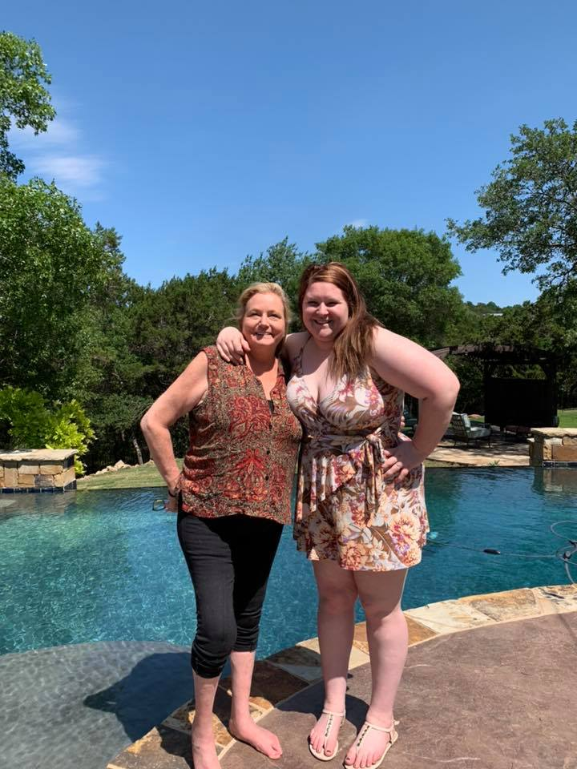

About Us
Hello! My name is Keli Mistretta. I have been a stay-at-home mom since 2002 when my youngest was born. It has been one of the great rewards of my life to stay home and experience my children’s growth with them. My youngest son recently went to college and when my daughter, Jocelyn, came to me with the idea of getting certified as Doulas and building our own business. I love to help men and women with any questions they may have concerning pregnancy, birth, and postpartum. I am a certified Doula with DONA International(Doulas of North America), a Lamaze coach certified through Lamaze International, and a lactation Specialist.
Hi all! My name is Jocelyn Collier and I would love to help you through this time! It is my passion to provide loving care all through pregnancy, labor, birth, postpartum, and beyond. I’m here for you 24 hours a day when you hire me as your birth Doula. We offer many services over many areas of your new journey into parenthood. It is very important to me that everyone feels they have a voice when in need and I am here to provide support and advocacy if you need it. Not everyone is comfortable with speaking up and getting the care and attention they need. I am a certified Doula with DONA International(Doulas of North America), a Lamaze coach certified through Lamaze International, and a lactation Specialist. I will be here for you through all stages of pregnancy and beyond